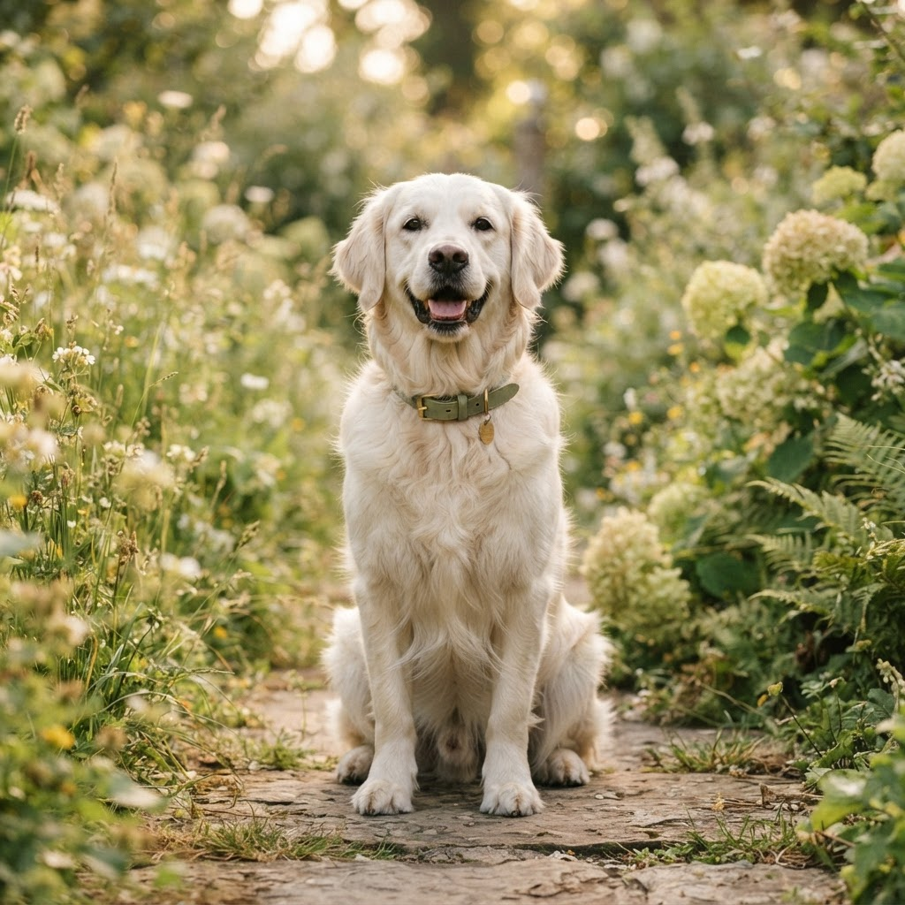

Dog care
Raising a happy, well-balanced dog
From the first wag to the golden years, here's how to meet your dog's needs for nutrition, movement, training, and companionship.
Lifespan 10–15 yrs
Highly social
Daily exercise
Trainable

Care by life stage
Choose your dog's stage
Needs change as dogs grow. Select a stage for focused guidance.
Puppy (0–12 months)
Growth, socialization, and gentle structure set the foundation for life.
- Feed a growth-formula diet in 3–4 small meals a day.
- Prioritize positive socialization with people, places, and sounds.
- Keep training sessions short, upbeat, and reward-based.
- Follow your vet's vaccination and deworming schedule.
Adult (1–7 years)
Consistency keeps an adult dog fit, engaged, and content.
- Two measured meals daily with weight checked monthly.
- 30–90 minutes of exercise depending on breed and energy.
- Reinforce cues and add enrichment to prevent boredom.
- Annual vet visit plus dental and parasite prevention.
Senior (7+ years)
Comfort and monitoring take center stage in the later years.
- Switch to a senior diet and watch for weight changes.
- Gentle, shorter walks to protect joints.
- Provide orthopedic bedding and easy access to water.
- Twice-yearly vet checks to catch issues early.
Good to know
Common dog care questions
Most dogs benefit from at least one to two walks daily, totaling 30 to 90 minutes, adjusted for breed, age, and health. High-energy breeds need more; seniors need gentler, shorter outings.
You can begin gentle, reward-based training as soon as your puppy comes home. Keep sessions short and positive, and focus early on socialization and name recognition.
Avoid chocolate, grapes and raisins, onions, garlic, xylitol (a sweetener), and alcohol. When in doubt, stick to complete dog food and vet-approved treats.
Build your dog's care plan
Get feeding, grooming, exercise, and training guidance tailored to your dog's age and lifestyle.